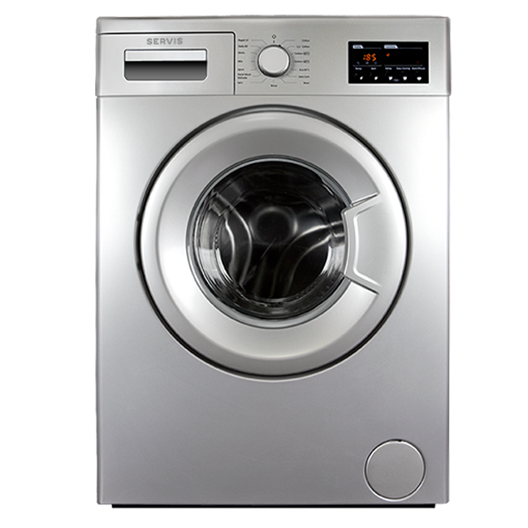

Washing Machine


In this dark, warm and damp environment, these residues not only make your washer smell unpleasant, but also can transfer these odors onto your clothes.
It’s not just your detergent that gives your clothes their fresh, clean smell. Your washer plays a part, too, so it’s important to keep it clean and give it the care it deserves. Ultimately, if your washer drum is dirty, it doesn’t matter how good your detergent is.
If your washer starts to smell, it’s probably due to a buildup of odor-causing residues left behind from laundry soils, detergents and hard-water minerals stuck in the drum. Dirt removed from clothes can stick around in the drum after washing and create a bacterial breeding ground.
1
Wipe your washer clean every month with soapy water, taking care to clean the inside of the drum as well.
2
Pick Tide’s Washing Machine Cleaner, and simply pour it into the drum. It fights residues and gets to the source of the odors that come from a smelly washer.
3
Run your washer on a hot, empty cycle with Tide Washing Machine Cleaner.
Extra Tip
For cleaner laundry, avoid overloading your washer.